Второй терапевтический вечер
Как выйти из ощущения «со мной что‑то не так» и перестать жить из недостаточности.
Почему мы годами не меняем жизнь, хотя очень хотим.
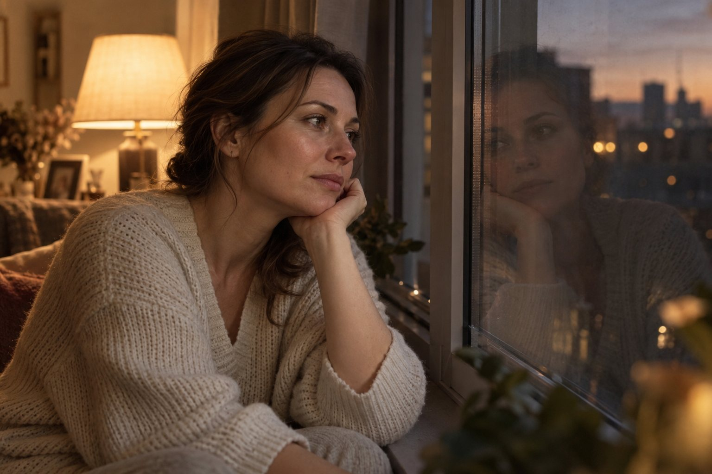
Что было вчера
Что будет сегодня
Игра продолжается
Вчера вы собрали 4 цифры. Сегодня будет ещё 4, последняя – в самом конце.
- 1Запишите каждую цифру или сделайте снимок экрана
- 2В конце эфира я дам ссылку на страницу с колесом
- 3Введёте 8 цифр подряд: вчерашние 4 и сегодняшние 4
- 4Крутите колесо и получаете один из подарков
Какие подарки можно получить
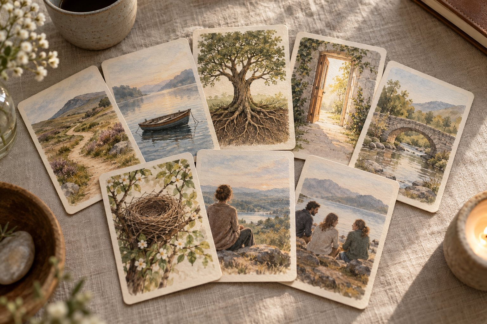
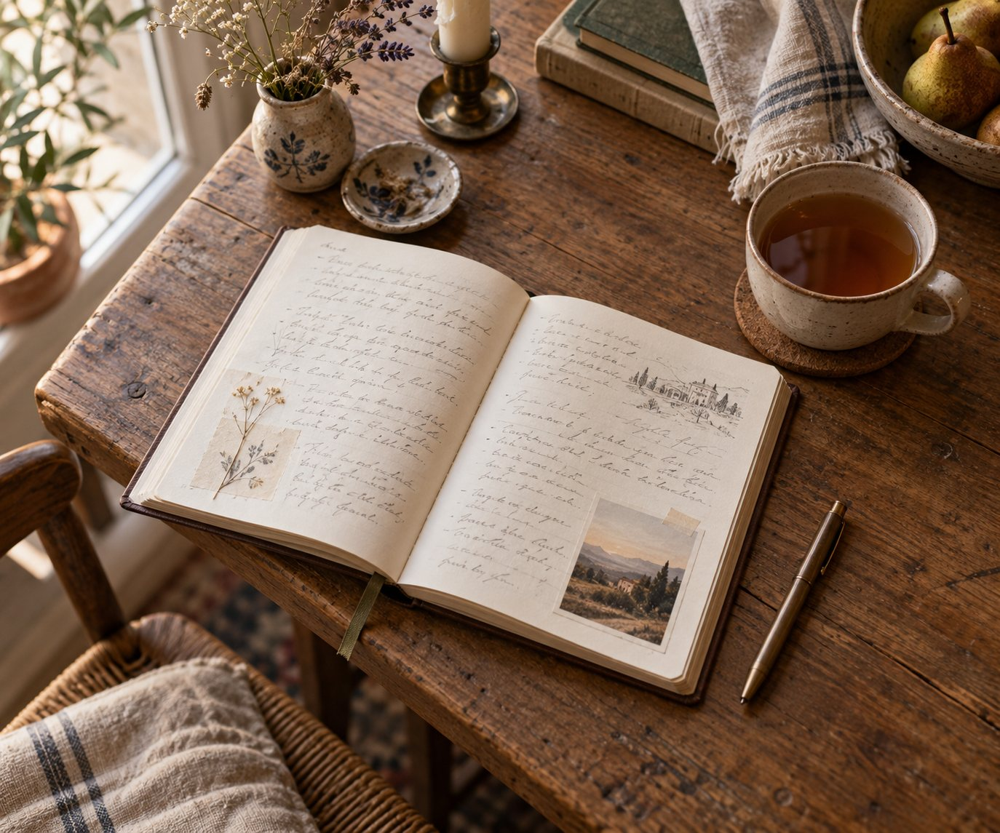

Это тоже входит
Аудиопрактики с доступом на 1 месяц
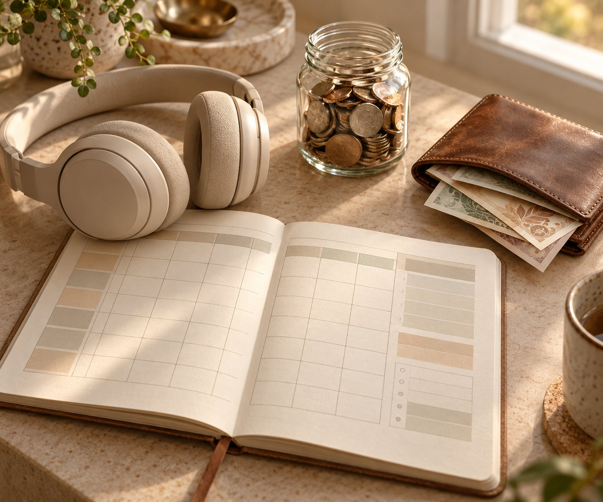
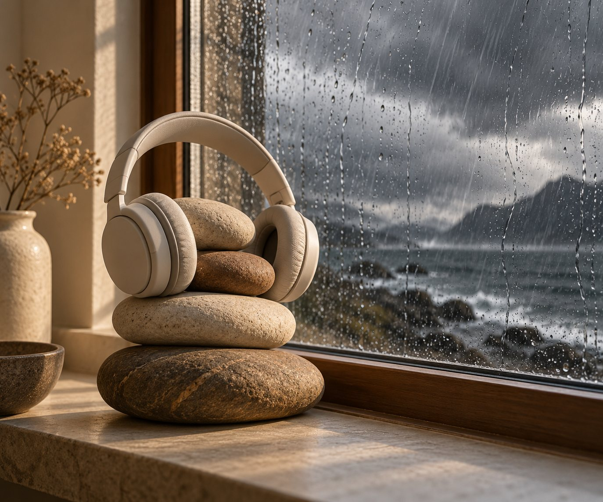
Анна Саба
Врач‑психиатр, психотерапевт
- 10+ лет практики
- 7 000+ клиентов
- 150+ специалистов обучила
- Московская медицинская академия им. И. М. Сеченова
- НМИЦ психиатрии и наркологии им. В. П. Сербского
- Факультет непрерывного медицинского образования РУДН
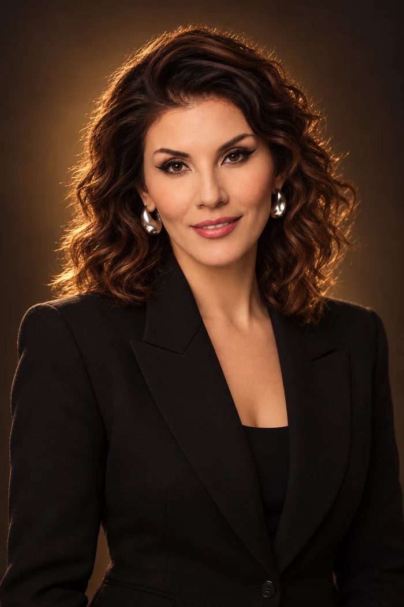
Вспомним виды ТДО
Это поможет нам дальше. Если вы не были вчера, посчитайте, сколько баллов по ТДО у вас.
10 видов ТДО
ТДО – травматический детский опыт
Насилие
Пренебрежение

Неблагополучие в семье
«Со мной что‑то не так»
Это яд, который отравляет все сферы жизни
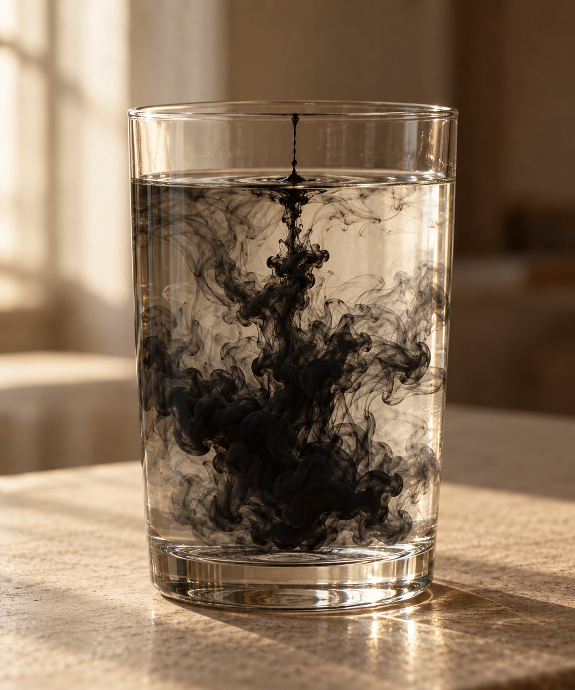
Мы не думаем эти мысли головой
Мы ощущаем их как состояние, которое отнимает жизненную энергию
Самые частые ощущения
Мы все сталкиваемся с этими ощущениями в кризисные моменты
Но у многих это ощущение становится постоянным. Его уже невозможно отличить от себя: оно как вторая кожа.
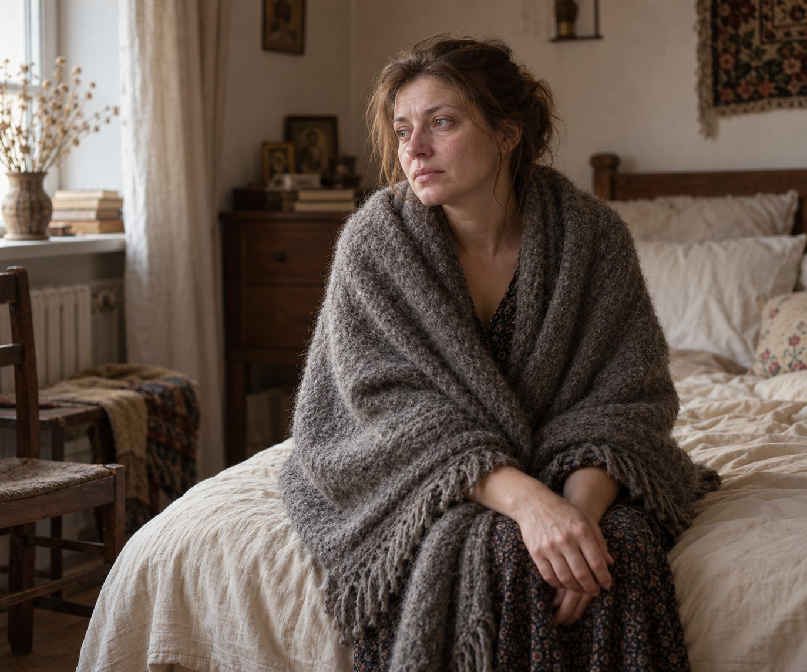
Откуда это берётся
Из травмы нелюбви: когда в детстве любовь нужно было заслужить
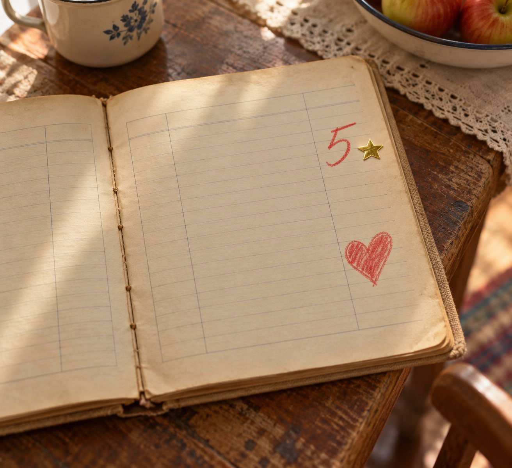
Ребёнок делает вывод: «Меня есть за что не любить»
И во взрослой жизни продолжает доказывать, что он достоин
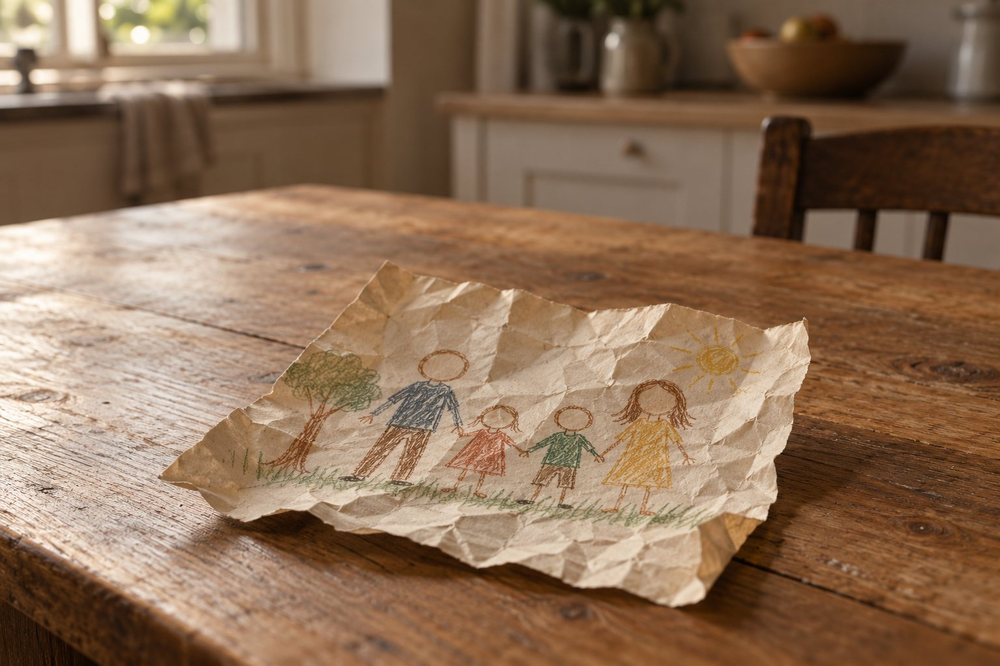
Почему люди не меняют свою жизнь?
Даже когда очень хотят и всё понимают
Потому что в этом есть вторичная выгода
Бессознательная выгода оставить всё как есть
Вторичная выгода – это удобно
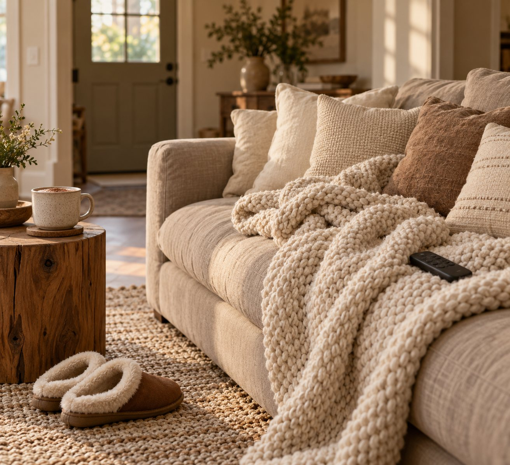
Проще сделать вид, что «мне это не надо»
чем попросить мужа оплатить обучение и начать этот разговор
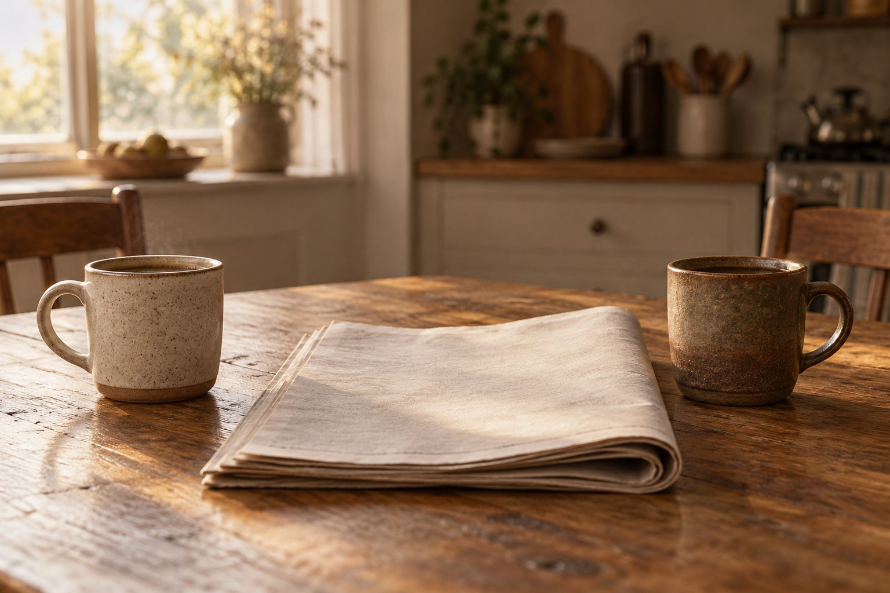
Найдите свою вторичную выгоду
Возьмите листок и ручку. Будет 4 вопроса. Отвечайте честно, это только для вас
И человек ждёт
Пока не ударится о дно
Жизнь – это движение
Листья опадают и весной появляются снова. Росток пробивается через асфальт. Ребёнок растёт во взрослого. Всё живое меняется.
Если вы не идёте в развитие сами, жизнь начинает толкать
И часто не самыми приятными способами
Как жизнь толкает к изменениям
1. Сначала – деньги
2. Потом – отношения
3. Потом – здоровье
Это уже очень серьёзный знак: остановитесь и подумайте, куда вы идёте
Многие из тех, кто выходит из тяжёлой болезни, меняют всё
Окружение, профессию, мышление. И начинают жить совсем другую жизнь.
Когда вы принимаете жёсткое решение изменить свою жизнь
токсичного партнёра
убыточный бизнес
окружение
новую профессию
и начать меняться
И почти сразу начинается откат
Жизнь подкидывает проверочку
Это не знак судьбы, что нужно остаться
Это ловушка. Проверка, насколько твёрдо ваше намерение
Поведётесь на мягкость и вернётесь – будет в 2 раза тяжелее, пока не пройдёте урок
Приняли решение – идите вперёд и не оглядывайтесь
Пространство уважает тех, кто умеет сжигать мосты без сожаления и шагать вперёд
Напишите, в какой сфере: деньги, отношения или здоровье
Пока вы внутри пузыря недостаточности
Вы не видите свои вторичные выгоды и не понимаете, как они работают
Выгоды схлопываются, когда вы перерабатываете ТДО
Не один запрос, а системно, раз за разом
Психологи, которые владеют ДПДГ, но не учились на 3.0, не работают с ТДО
Они работают с запросом клиента
Работа «от запроса» – это мимо
Клиент приходит: «У меня плохая самооценка». Психолог работает с самооценкой, а причина остаётся в детстве.
«Все врут» – доктор Хаус
Моя система ДПДГ 3.0
Что происходит, когда ТДО проработан

Ещё одна черта психически здорового человека
Не обижается, когда выбирают не его
История с дня рождения
Подруга приехала ко мне на день рождения на пару часов и говорит: «Меня ждёт мужчина, я поеду»
Я перекрестила её и отправила: «Езжай, конечно!»
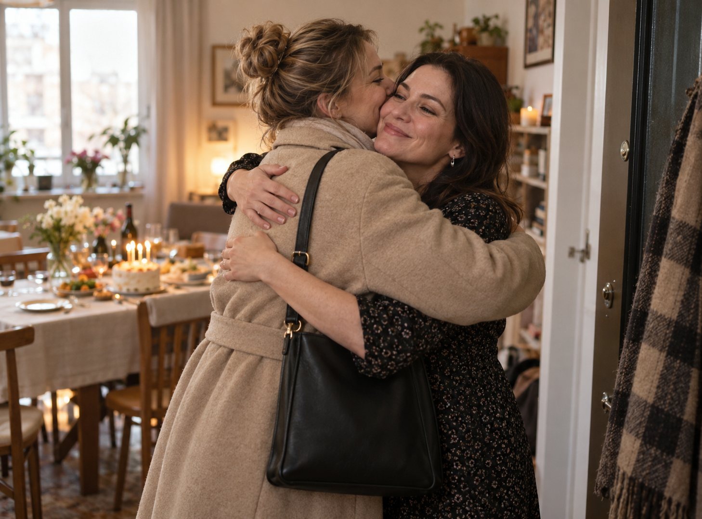
Половина людей в такой ситуации уходит в обиду
Почему мы обижаемся, когда выбирают не нас?
Выбор человека в моменте не означает, что вас не любят и ваша дружба ничего не стоит
Обида «выбрали не меня» – это отсутствие самоценности
Тогда вы постоянно доказываете свою ценность, надо и не надо
Я не главный человек в жизни подруг, но важный
Поэтому моей дружбе 20 и 35 лет
Что такое защищённость
Когда под ногами что‑то есть, можно расслабиться и жить спокойно
Пример: 18 лет в одной компании
Начинают сокращать людей вокруг вас. Приходит сообщение от начальника: «Зайди ко мне».
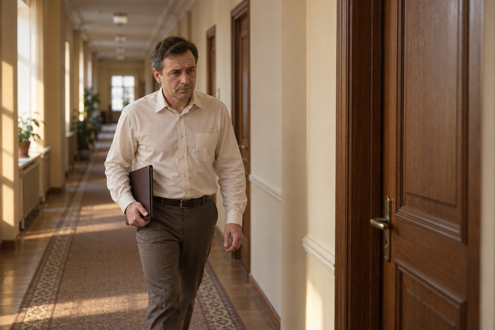
Пока вы идёте к кабинету
А начальник говорит: «Ты будешь руководить отделом, зарплата в 5 раз больше»
И за секунду он снова лучший человек на свете
Когда незащищённо – негатив. Когда защищённо – позитив.
Человек, который опирается только на внешнее, всё время качается
Защищённость – это внутреннее чувство
Оно не зависит от денег, партнёра и работы. Оно закладывается в детстве.
Опираться можно только на внутреннее
«Со мной всё в порядке. Я справлюсь. Я беру свою жизнь в свои руки.»
Так живут люди, которые проработали ТДО
Так живу я, мои студенты и выпускники. Это мы даём на ПКТ.
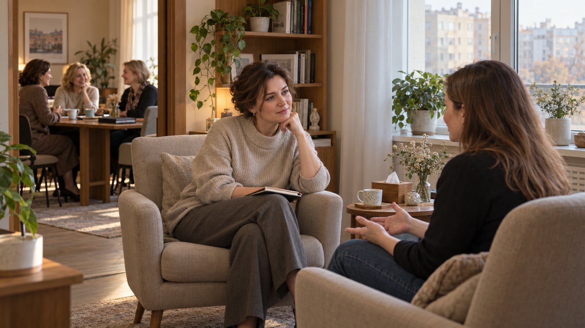
Практика
Ваша лучшая жизнь
Я покажу на фигурках вашу лучшую жизнь и то, как ПКТ помогает соединиться с ней
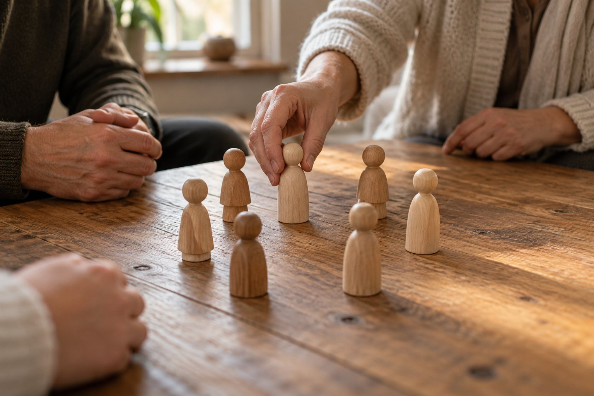
Кто из вас задумывался о том, чтобы сменить профессию?

Почему вы ещё этого не сделали?
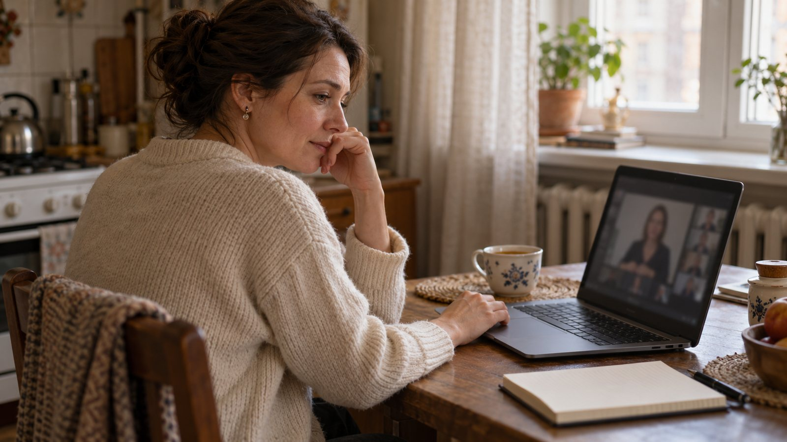
Очень хорошая новость для тех, кто пойдёт на программу ПКТ
Этого решения нет ни на одном обучении
Мы разработали сервис, который за вас будет делать всю рутину и вести соц. сети, привлекая клиентов, а вы будете сконцентрированы только на качестве своих сессий

Давайте посмотрим, как это выглядит
«Карманный психолог» – наш бот в Телеграме
Кто хочет кайфовать только от работы, делегировав всю рутину, да ещё чтобы клиенты сами приходили к вам

Для начала пройдём короткий тест, который поможет вам понять, получится ли у вас помогать клиентам
Тест
- Близкие часто приходят к вам поговорить о своих проблемах?
- Вы умеете слушать и не перебивать?
- Вы замечаете, что человек чувствует, даже когда он молчит?
- Вам интересно, почему люди поступают так, а не иначе?
- Вы сами прошли через трудности и знаете, каково это?
Что будет отличать вас от многих психологов, если вы пройдёте ПКТ
Многие психологи учатся годами и собирают сертификаты
Вы будете настолько уверены в своих инструментах, что у вас не будет страха брать клиентов и повышать цену, вы не будете саботировать свою работу, потому что вы получите большой опыт уже в процессе обучения

Программа «Психолог краткосрочной терапии и здоровый человек»
За 6 месяцев вы проработаете свой ТДО, научитесь помогать себе и родным, освоите востребованную профессию с доходом от 300 000 ₽/мес и получите диплом о переподготовке установленного образца
Можно учиться и параллельно работать на текущей работе
Ольга, инженер: +100 000 ₽ дополнительного дохода

Изменения за время обучения произошли колоссальные, но очень мягко – и это особенно ценно в 55+
Ваш путь по шагам
- 1Адмиссия
- 2Зачисление
- 3Обучение
- 4Экзамены
Модуль 1. Основа терапии ДПДГ
- Как работает метод и нервная система
- Этика психолога
- Стандартный протокол из 8 фаз
- ДПДГ 2.0
Результат: вы проведёте полную сессию ДПДГ от начала до конца
Модуль 2. Комплексная травма и защиты
- ДПДГ 3.0
- Основы гипнотерапии и системной терапии
- Работа с сопротивлением
- Групповая терапия
- Продвижение в соцсетях
Результат: вы возьмёте клиентов со сложной травмой
Модуль 3. Терапия основных неврозов
- ПТСР и ОКР
- Панические атаки и тревожные расстройства
- Зависимости
- Работа с парами и детьми
Результат: вы работаете с основными запросами клиентов
Метод преподаю я лично
ДПДГ 3.0 есть только у меня
Вы учитесь у первоисточника
Собственная проработка идёт вместе с обучением
Ваша личная терапия входит в программу без дополнительной платы
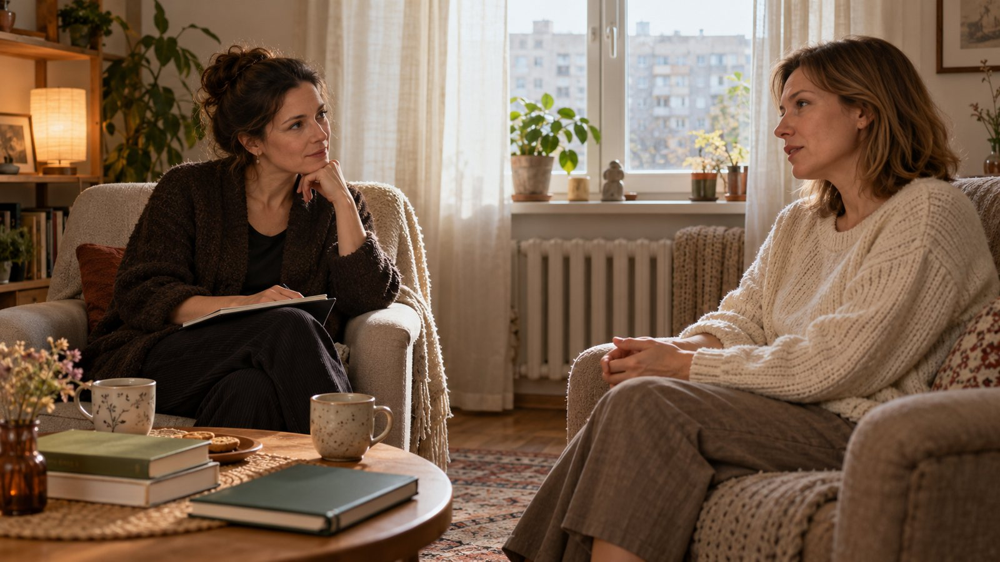
Супервизоры рядом
Со сложным клиентом вы работаете под присмотром опытного супервизора

Как вы будете находить клиентов
Отдельный блок о продвижении психолога: соцсети, цена, первые клиенты
А всю рутину заберёт наш сервис «Помощник психолога в кармане»
Диплом о переподготовке
Вы работаете законно
Ваш путь за 6 месяцев
Что после диплома
Доступ к записям на 1 год, материалы остаются у вас. Сообщество выпускников
Выпускница Ольга начинала с нуля
- Было: доход 0 ₽ и страх перед неизвестным
- Стало: одна сессия стоит 10 000 ₽
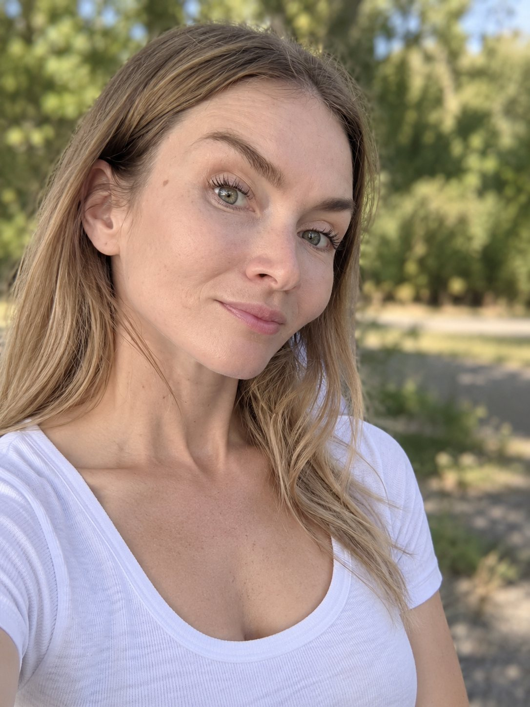

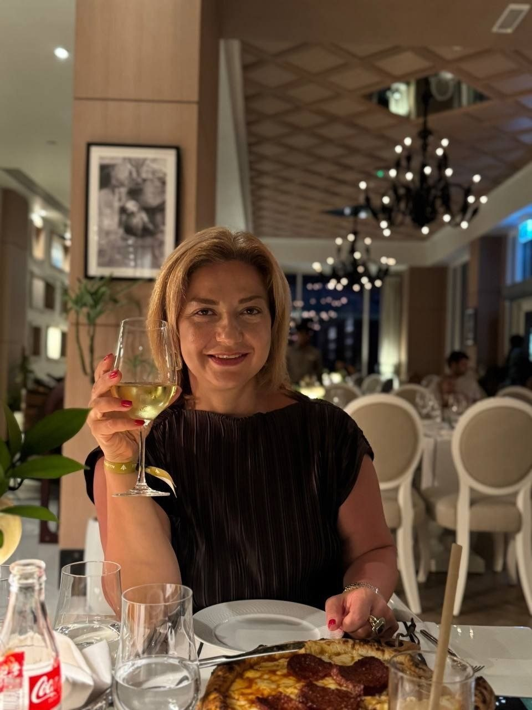
Программа ПКТ – это полная перепрошивка нервной системы… Это самый лучший подарок в моей жизни
В гостях у калькулятора
2 клиента в день
10 клиентов в неделю
Работаете 5 дней с пн по пт
40 сессий в месяц (40 часов)
Сессия стоит 10 000 ₽
40 сессий = 400 000 ₽ в месяц

Сессия стоит 15 000 ₽
40 сессий = 600 000 ₽ в месяц

Сессия стоит 20 000 ₽
40 сессий = 800 000 ₽ в месяц

Даже 1 клиент в день по 10 000 ₽
Это 200 000 ₽ в месяц
Помогать людям и хорошо зарабатывать можно одновременно
«Стоимость обучения полностью вернула ещё до диплома»
«Рассрочку даже не почувствовала. Доход удвоился»
И ещё раз вернёмся к очень важному
Что волнует большинство, и почему многие так и не решаются на качественные изменения в своей жизни.
Страх, что не получится.
А не получится что? Проработать себя или найти клиентов и окупить обучение?
У многих второе – страх не окупить
Потому что люди не понимают, где и как клиентов находить.

Поэтому мы и разработали помощника психолога в кармане
Что отнимает время у психолога
Написать посты в соц. сети, переписка с клиентами, запись, календари, оплаты, выслать ссылку на сессию, а если отменился клиент и т.д.

«Помощник психолога в кармане»
Снимает 95% рутины с вас
Ведёт ваши соцсети
Пишет посты для Telegram и Instagram*. Вы только утверждаете.
Отвечает клиентам
Записывает на сессию, присылает ссылки на оплату и ссылки на встречи
Ведёт календарь и карточку клиента


Подсказывает по работе с клиентом
Рекомендации и домашние задания составлены по моему опыту, по сути у вас доступ к моему цифровому клону, к моим знаниям
Сколько вы сэкономите за счёт этого
- Личный ассистент – от 30 000 до 70 000 ₽ в месяц
- SMM‑специалист – от 30 000 до 100 000 ₽ в месяц
Это от 60 000 до 170 000 ₽ в месяц
И часы вашего времени каждый день

Время освобождается для вас
Занимайтесь спортом, читайте книги, уделяйте больше времени семье, путешествуйте
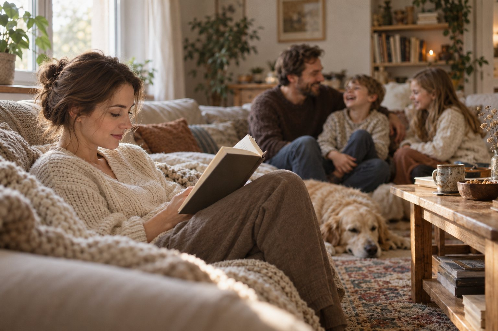
Главное – это удовольствие от работы
Вы занимаетесь тем, ради чего пришли в профессию
Доступ к помощнику психолога в кармане с 3‑го месяца обучения
К окончанию программы у вас уже есть соц. сети и очередь клиентов

Алёна Третьякова. Было
- Денег хватало на базовый минимум
- Отношения развалились
- Страшило будущее
- Не складывались отношения с людьми, с ребёнком, с собой
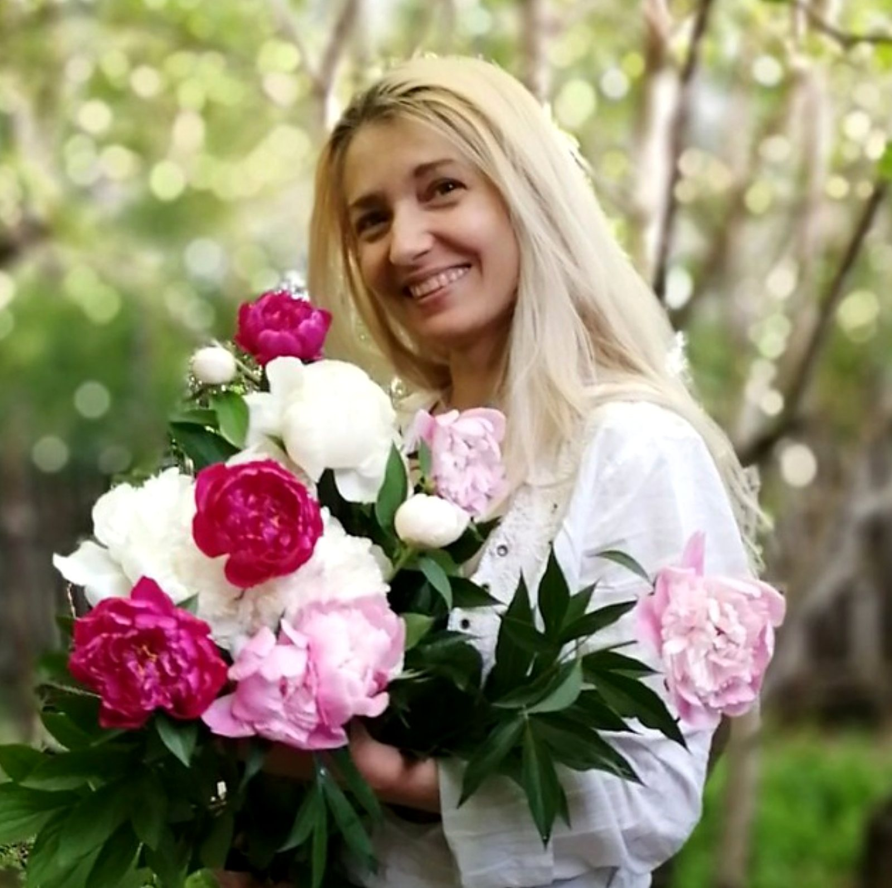
Алёна Третьякова. Холодный душ
«Очередной ухажёр ушёл, сказав на прощание: разберись с собой сначала, потом строй отношения, не хочу быть тебе жилеткой. Его слова меня отрезвили»
Алёна Третьякова. Туда‑сюда
Хотела на программу, но банк не давал рассрочку и был страх, что не выплатит
«То: рискни, это твой шанс на счастливую жизнь. То: куда ты лезешь, какой психолог, себе помоги сначала»
Алёна Третьякова. Стало
Сколько бы стоило, если платить по отдельности за всё, что вы получаете на ПКТ
Мой личный опыт: 40 протоколов по 20 000–175 000 ₽, личная терапия, годы учёбы.
Около 1 500 000 ₽
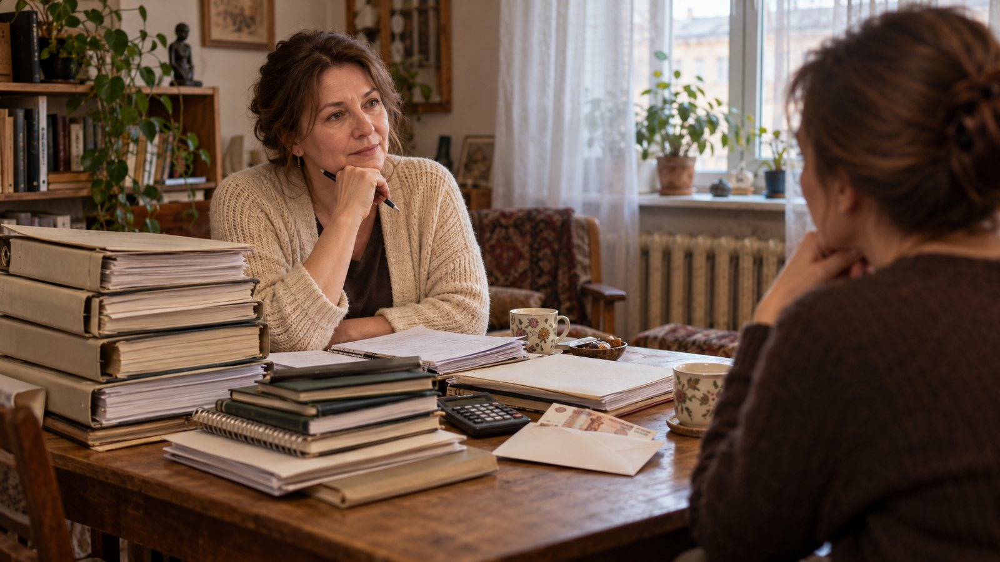
Стоило ли оно того?
Однозначно да
Сколько бы вы заплатили за свой выдающийся результат и за жизнь мечты?
У вас всё это есть в одной программе за 6 месяцев
Программа «Психолог краткосрочной терапии и здоровый человек»
- Авторский метод ДПДГ 3.0
- 3 модуля обучения
- Личная терапия и проработка всего ТДО
- Супервизии
- Поддержка кураторов
- Диплом установленного образца
- Помощник психолога в кармане
- Бонусный курс: «Быстрый старт сильного терапевта»
К старту потока в декабре цена будет 450 000 ₽
Это в 3 раза дешевле того, что заплатила за жизнь мечты я (~1,5 млн ₽)
Для тех, кто записывается на эфире
Бонусный курс «Быстрый старт сильного терапевта»
До начала учёбы вы убираете внутренние страхи и заходите в обучение сильнее.
Ценность этого курса 100 000 ₽, но для тех, кто запишется на эфире – это подарок.
Бонус «Помощник психолога в кармане»
Снимает 95% рутины с 3‑го месяца учёбы и выстраивает к вам очередь из клиентов к концу обучения
Многие закрывают рассрочку ещё во время учёбы
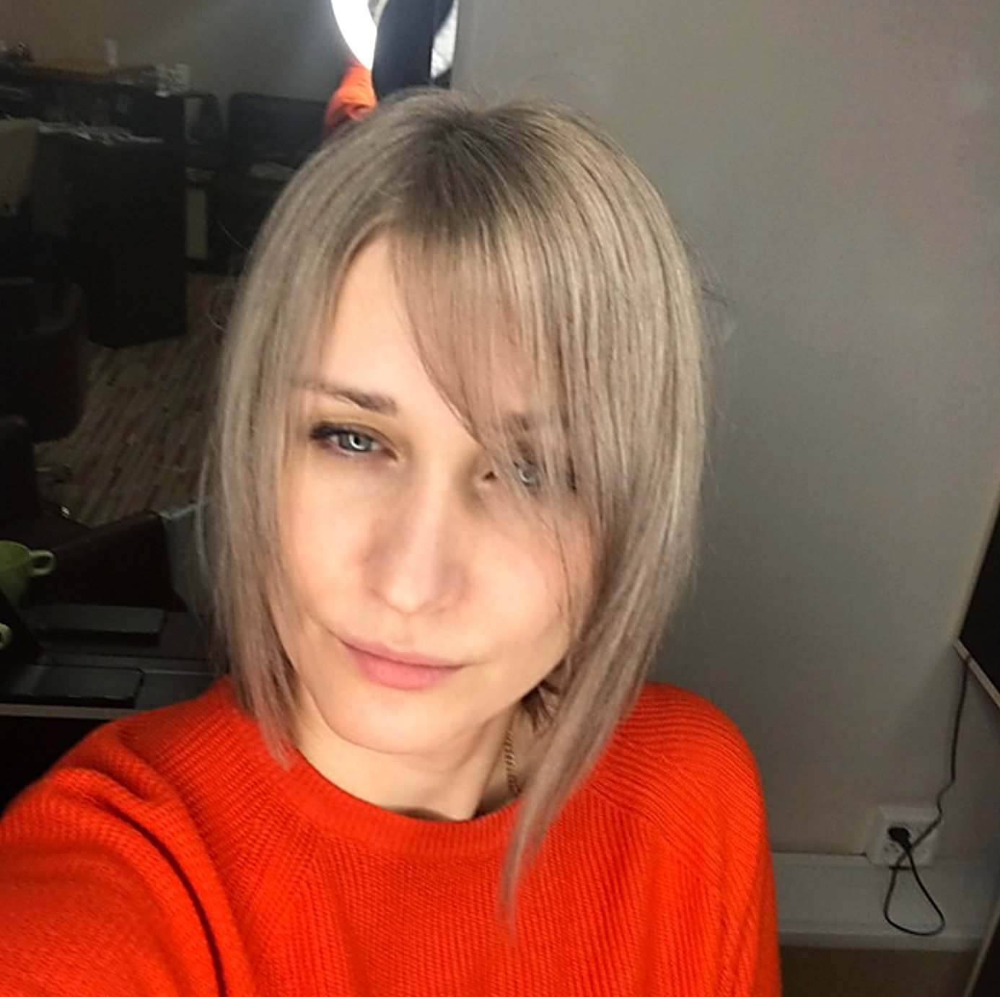
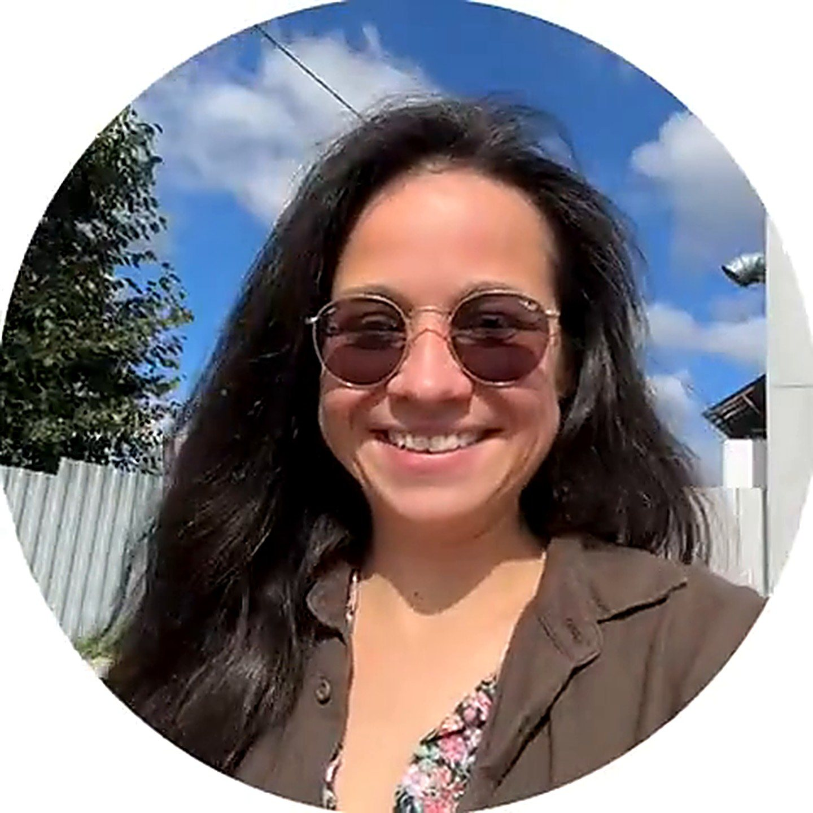
Как записаться
- 1Вы оставляете предоплату на эфире 5 000 ₽ (ссылка в чате). Предоплата фиксирует самую низкую цену (350 000 ₽) + 2 бонуса («Помощник психолога в кармане» и «Быстрый старт сильного терапевта»)
- 2Проходите адмиссию (собеседование)
- 3Если всё хорошо, вам приходит приглашение к зачислению
Что такое адмиссия?
Мы ответственно подходим к отбору обучающихся
Берём только тех, у кого точно получится
Таким образом собирается сильное окружение и повышается качество нашей работы
Если после адмиссии вам пришёл отказ или вы поняли, что программа вам не подходит – 5 000 ₽ возвращаются
Условия эфира
Предоплата 5 000 ₽ закрепляет:
5 минут
Ссылка на предоплату в чате
Аминат: «Лучшее вложение»
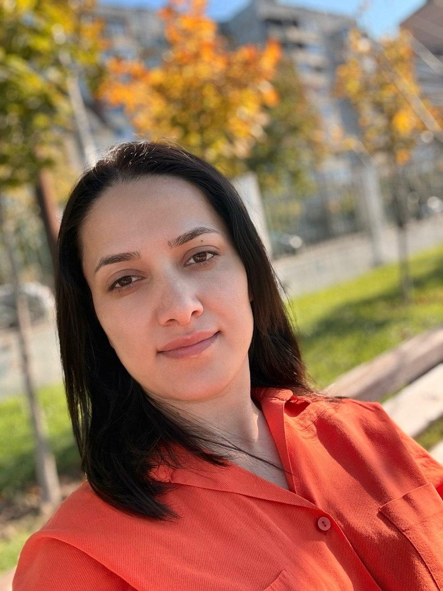
Единственное обучение, которым я довольна на все 100%, это моё лучшее вложение
Есть вопросы по программе?

Давайте проговорим сомнения, которые мешают решиться
«Боюсь тратить деньги»
Вы вкладываете в профессию, которая окупает себя
Это инвестиция в себя
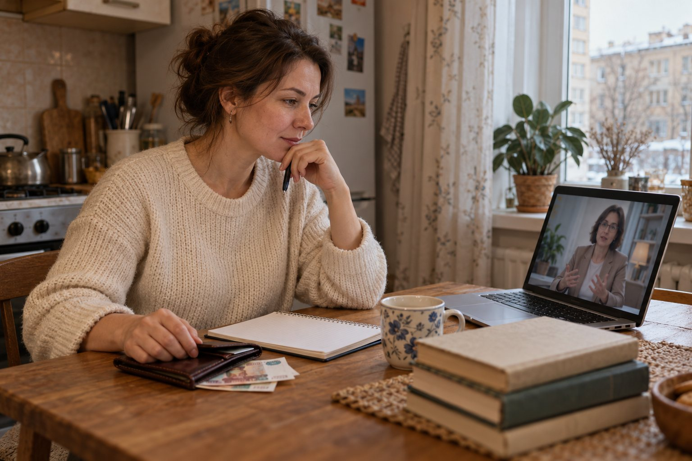
Налоговый вычет
13% за обучение можно вернуть
До 19 500 ₽ за каждый год оплаты
«А если у меня не получится?»
Метод разложен на протоколы по шагам
Рядом кураторы и супервизоры
«Мне уже 45»
Ольга начала в 55+ и сейчас зарабатывает практикой от 100 000 ₽ в месяц
Если сомневаетесь
- 1Внесите 5 000 ₽ и пройдите собеседование
- 2Решение примете после собеседования
- 3Решите не идти – предоплата вернётся
После эфира действуют 48 часов
Потом цена 375 000 ₽, бонусы сгорают
Как найти первых клиентов, ещё пока учитесь
С 3‑го месяца «Помощник психолога в кармане» ведёт ваши соцсети, отвечает людям и записывает на сессии. К диплому у вас уже очередь клиентов
Кому подходит программа

Кому не подходит
Вы ждёте, что всё изменится само
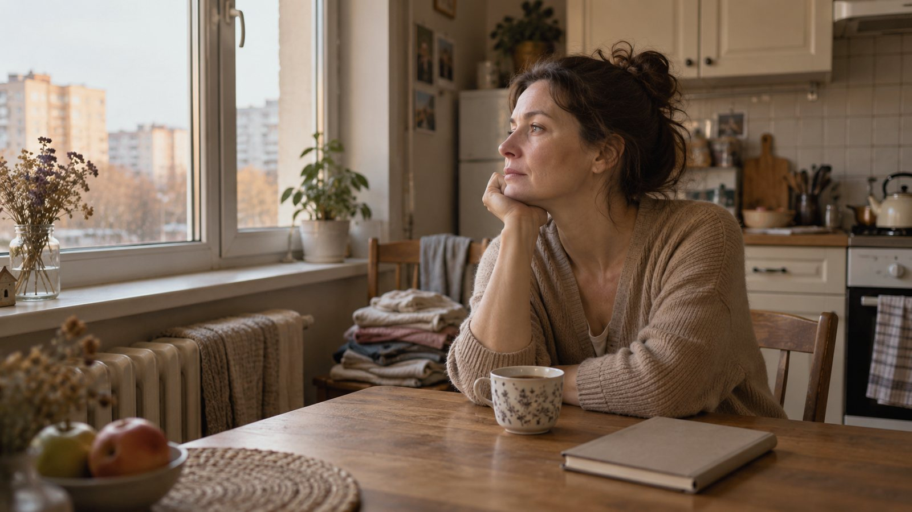
Через 6 месяцев

Вчера несколько человек оставили заявку, но не оплатили
Вы взрослые люди. Заявка – это осознанное решение.
Мы работаем со взрослыми
Как можно случайно ввести имя, фамилию, телефон и e‑mail?
Если вы вчера оставили заявку – ссылка на оплату в чате
Колесо подарков
- 1Откройте ссылку в чате
- 2Введите 8 цифр подряд: 4 вчерашние и 4 сегодняшние
- 3Нажмите «Крутить» и оставьте контакты
- 4Отдел заботы выдаст подарок в понедельник
Что может выпасть
«Деньги база»
«Стрессоустойчивость про»
«Твоя лучшая жизнь»
Спасибо, что были со мной два вечера
Увидимся на ПКТ